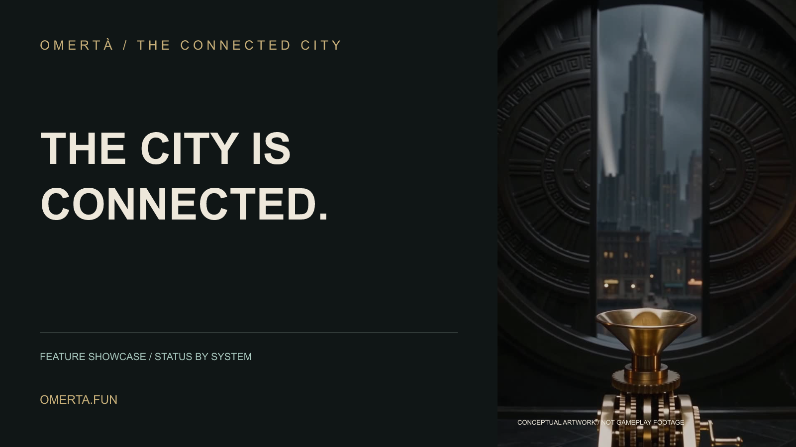
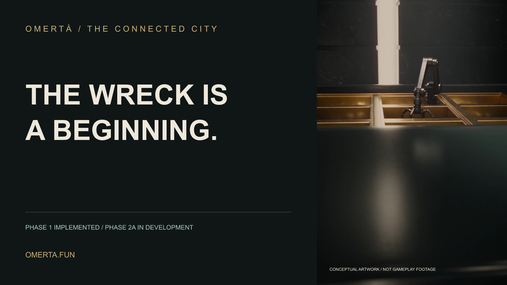
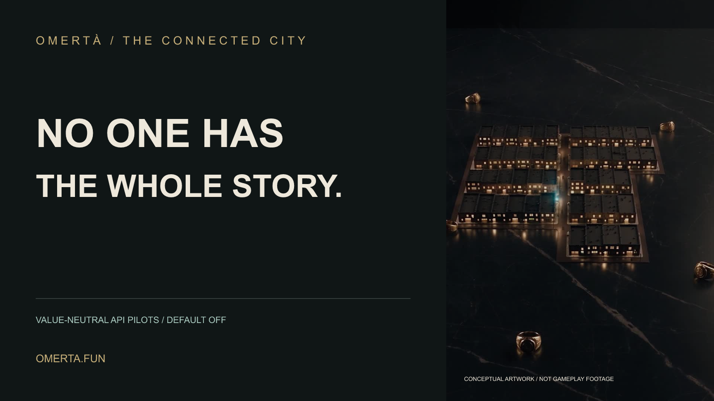
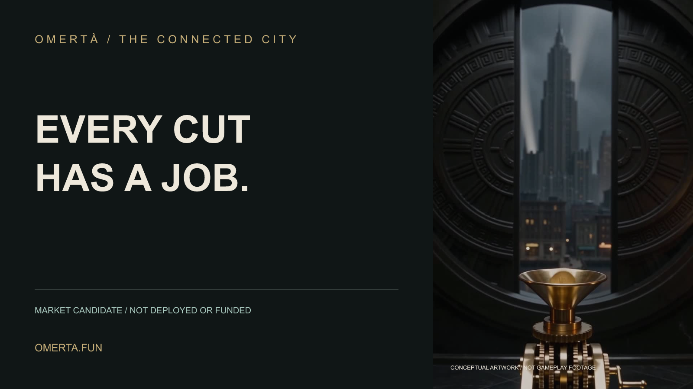

← CollectionOMERTÀ / ANNOUNCEMENT KIT
Give each milestone
its own story.
Four announcement sets. Each includes an X thread, Discord post, email draft, and matching graphic.
Drafts only. Nothing has been sent or published.
Replace [CAMPAIGN_URL] with the verified public destination. Current wording announces a showcase or implementation milestone. It does not announce future systems as live.
FEATURE SHOWCASE / STATUS BY SYSTEM
The city is connected.
Publication gate: Use when the campaign destination is publicly available; replace [CAMPAIGN_URL] with that verified destination.

X thread
- Every cut has a destination. Every object has a history. No one has the whole story. Meet the three systems behind Omertà’s connected city.
- Explore the Hook / Market candidate, World Graph Phase 1, and default-off Coordination API pilots. Implementation and public availability are different milestones.
- Watch the films, trace a connection, and read the recorded local results: [CAMPAIGN_URL]
Discord and email drafts
Discord
The connected city showcase brings Omertà’s Hook, World Graph and Coordination Engine into one place. Watch the films, explore the browser simulations, or follow a real local API walkthrough. Each system has a clear built / next label. Explore: [CAMPAIGN_URL]
Email / Meet Omertà’s connected city
Every object and every piece of evidence can lead somewhere. Our feature showcase explains three connected Omertà systems through films, diagrams and interactive examples. Market remains a candidate; World Graph Phase 1 is implemented; Coordination pilots default off. Start with the interactive field guide: [CAMPAIGN_URL]
PHASE 1 IMPLEMENTED / PHASE 2A IN DEVELOPMENT
The wreck is a beginning.
Publication gate: Implementation showcase copy only. A public-play launch needs separate confirmation of availability and player eligibility.

X thread
- The wreck is a beginning. Omertà’s implemented World Graph Phase 1 connects salvage, conserved materials and crafting.
- Our local API example turns one wreck into materials, then consumes four scrap steel and 300 game cash to create one hardened steel. The example is synthetic; its handler responses are real.
- Try the simulation and inspect the walkthrough: [CAMPAIGN_URL]. Phase 2A remains in development. NFT export is not live.
Discord and email drafts
Discord
Follow a wreck into the material ledger. The World Graph Phase 1 showcase demonstrates salvage and crafting through a local API example and a resettable browser simulation. Phase 1 is implemented and OMR-neutral; Phase 2A is in development and NFT export is not live. Trace the example: [CAMPAIGN_URL]
Email / From wreck to material: inside World Graph
A wreck can become the input to another object. Our World Graph showcase follows that transformation through the implemented Phase 1 handlers, with recorded inventory before and after crafting. Try the simulation, then read the exact response evidence: [CAMPAIGN_URL]. Phase 2A is still in development; NFT export is not live.
VALUE-NEUTRAL API PILOTS / DEFAULT OFF
No one has the whole story.
Publication gate: Review/demo announcement only. Do not call the pilots publicly live without explicit activation and scope verification.

X thread
- No one has the whole story. Omertà’s Coordination Engine pilots connect original discoveries, deliberate sharing and corroborated conclusions.
- In our local Split Ledger demonstration, two synthetic investigators discover the Docks and Foundry sources, share access, and complete one investigation. The pilot pays no reward.
- Read the evidence and run the local example: [CAMPAIGN_URL]. Phases 00–01 are implemented for review; API pilots remain default off.
Discord and email drafts
Discord
Two original sources. One corroborated account. The Split Ledger case study follows two synthetic investigators through Omertà’s real local Coordination handlers. Deliberate sharing makes the missing source accessible. The pilots remain default off and value-neutral. Watch or reproduce the demonstration: [CAMPAIGN_URL]
Email / Two sources, one conclusion: the Split Ledger
The Split Ledger needs evidence one investigator cannot provide alone. Our new case study follows two original discoveries through sharing and completion using real local API handlers. It includes the recorded responses and a runnable fixture: [CAMPAIGN_URL]. This is an implementation demonstration of default-off, value-neutral pilots.
MARKET CANDIDATE / NOT DEPLOYED OR FUNDED
Every cut has a job.
Publication gate: Candidate design announcement only. Deployment, funding and final parameters must be verified before writing a market-launch announcement.

X thread
- Every cut has a job. Omertà’s Market candidate defines a 9% base sell fee for the canonical pool: 2% developer, 1.6% RWA recipient, 2.4% community and 3% protocol liquidity.
- Surge adds 0–1%; LP fees are additional. Companion mechanisms cover finite reserves, inventory bonds, solver-funded arbitrage, Turf fee rights and liquidity commitments.
- Explore the allocation example: [CAMPAIGN_URL]. Market is not deployed or funded. Independent pools have their own policies.
Discord and email drafts
Discord
Explore the Market candidate’s fee flow with a browser-only allocation example. The canonical pool design has a 9% base sell fee across four destinations, plus bounded surge; LP fees are additional. Market is not deployed or funded. Read the design showcase: [CAMPAIGN_URL]
Email / Follow the fee: Omertà’s Market candidate
The Market candidate gives the canonical pool’s base sell fee four explicit destinations. Our new interactive example makes the 9% allocation visible, alongside a 0–1% surge input. LP fees and other trading costs are outside the example. Explore: [CAMPAIGN_URL]. Market remains a candidate, not deployed or funded.